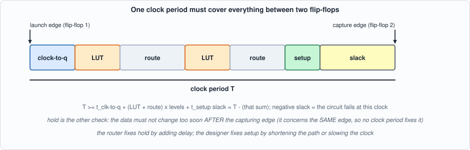
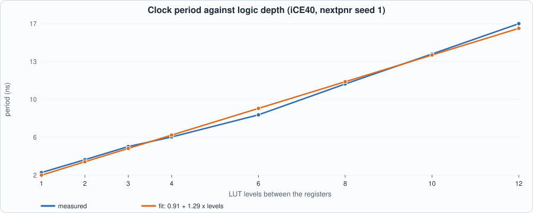
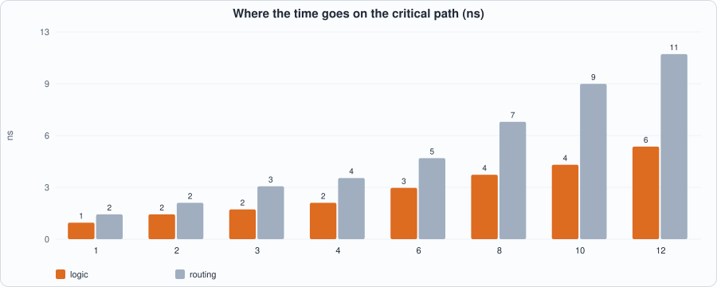
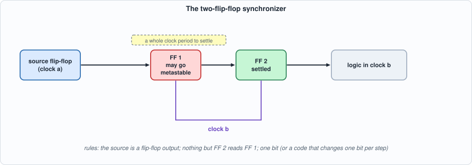
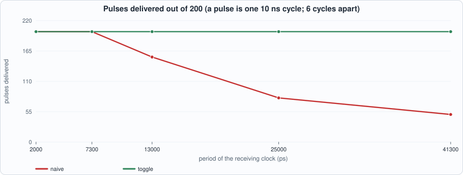
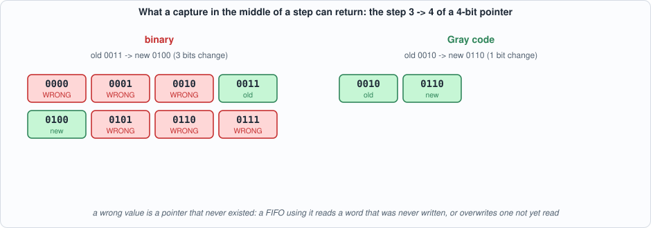
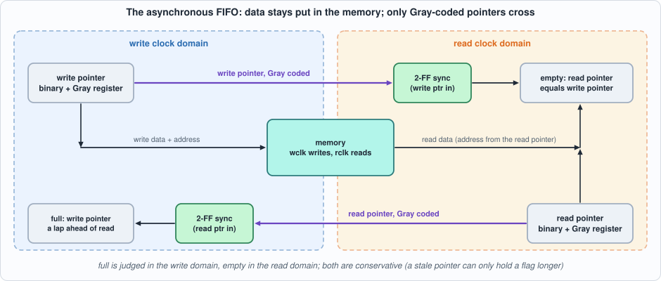

3. Timing and Clock Domains: Setup and Hold, Reading a Timing Report, Reset, Synchronizers, and the Asynchronous FIFO¶
About the kestrels in this picture
- American kestrel (Falco sparverius) is the smallest falcon in North America and is found from Alaska to South America. The sexes differ in plumage: males have blue-grey wings, females are barred rufous. It hunts insects and small vertebrates from perches and by hovering.
- Common kestrel (Falco tinnunculus) ranges across Europe, Asia and Africa. It is famous for hovering: it faces the wind and holds its head almost still while its body adjusts, searching the ground below before it drops onto prey. A much-cited study reported that voles' scent trails reflect ultraviolet light, which kestrels may be able to see.
The scene is imaginary and the birds are stylised drawings.
What you will see: how a clock period is spent (and how to read the report that says so), a measured straight-line law relating logic depth to clock speed, how much a clock speed moves with nothing but the placer's random start, a reset that asserts at once and releases cleanly, a synchronizer that gives a signal time to settle, two ways to carry a one-cycle pulse across a clock boundary (one of them loses most of them), a counter code (Gray) that is proved safe to carry across, and an asynchronous FIFO that is tested against a model of metastability, including the two ways it failed while I was writing it.
What you need to know first: Chapters 1 and 2. A flip-flop captures its input at a clock edge; that is all the hardware this chapter assumes.
What this chapter builds: rtl/tchain.sv (a register, D LUT levels, a register), rtl/cdc_sync.sv (the two-flip-flop synchronizer), rtl/cdc.sv (pulse crossings, reset synchronizer, Gray converter, asynchronous FIFO), rtl/gray_prop.sv (the Gray property as an assertion), tb/cdc_sync_meta.sv (a synchronizer with random metastability, same name and ports as the real one), the testbenches tb/cdc_fifo_tb.sv, tb/cdc_pulse_tb.sv, tb/rst_sync_tb.sv, the independent model model/cdc_model.py, and the scripts tools/ch03_example_a.py, tools/ch03_example_b.py, tools/ch03_run.py, tools/mut_ch03.py.
Setup, hold, and the period equation¶
A flip-flop does two things at a clock edge: it samples its input and, a little later, drives its output. Between two flip-flops sits logic, and the logic and its wires take time. For the second flip-flop to capture what the first one launched, the signal must have arrived and settled before the next edge:

Figure 3.1: one clock period, from the launching edge to the capturing edge. Whatever is left over is slack.- setup time (t_setup): how long before the capturing edge the data must be stable;
- clock-to-q (t_cq): how long after the launching edge the first flip-flop's output is valid;
- period equation:
T >= t_cq + (LUT + route) x levels + t_setup; slack isTminus that sum. Negative slack means the circuit does not work at that clock. - hold time (t_hold): how long the data must stay stable after the capturing edge. It involves the same edge on both flip-flops, so no clock period fixes it; a path that is too fast violates it, and the tools repair it by adding delay.
This chapter measures setup (the period equation) with the open tools. It does not measure hold: nextpnr takes care of it and the book has nothing of its own to show about it, so none of the numbers below say anything about hold.
Reading a timing report¶
nextpnr prints, for each clock, the longest register-to-register path it found and the maximum frequency that implies. Here is the report for the design built in Example A with six LUT levels (nextpnr, iCE40 HX8K, seed 1, asked for 200 MHz so that it works as hard as it can; the lines that name the source file are removed):
Critical path report for clock 'clk$SB_IO_IN_$glb_clk' (posedge -> posedge):
Info: curr total
Info: 0.5 0.5 Source x[0]_SB_DFF_Q_6_DFFLC.O
Info: 0.6 1.1 Net x[0][9] budget 0.292000 ns (6,20) -> (5,19)
Info: 0.4 1.6 Source x[6]_SB_LUT4_O_I2_SB_LUT4_O_I3_SB_LUT4_O_I1_SB_LUT4_O_I0_SB_LUT4_O_I0_SB_LUT4_O_3_LC.O
Info: 1.3 2.8 Net x[6]_SB_LUT4_O_I2_SB_LUT4_O_I0_SB_LUT4_O_I2_SB_LUT4_O_I1_SB_LUT4_O_I1[0] budget 0.292000 ns (5,19) -> (7,18)
Info: 0.4 3.2 Source x[6]_SB_LUT4_O_I2_SB_LUT4_O_I3_SB_LUT4_O_I1_SB_LUT4_O_I0_SB_LUT4_O_LC.O
Info: 0.6 3.8 Net x[6]_SB_LUT4_O_I2_SB_LUT4_O_I3_SB_LUT4_O_I1_SB_LUT4_O_I0[3] budget 0.292000 ns (7,18) -> (6,18)
Info: 0.4 4.3 Source x[6]_SB_LUT4_O_I2_SB_LUT4_O_I3_SB_LUT4_O_I1_SB_LUT4_O_I2_SB_LUT4_I3_LC.O
Info: 1.0 5.2 Net x[6]_SB_LUT4_O_I2_SB_LUT4_O_I0_SB_LUT4_O_I2[3] budget 0.292000 ns (6,18) -> (5,16)
Info: 0.4 5.7 Source x[6]_SB_LUT4_O_I3_SB_LUT4_O_I2_SB_LUT4_O_LC.O
Info: 0.6 6.3 Net x[6]_SB_LUT4_O_I2_SB_LUT4_O_I3[2] budget 0.292000 ns (5,16) -> (5,17)
Info: 0.4 6.7 Source x[6]_SB_LUT4_O_I3_SB_LUT4_O_I2_SB_LUT4_I1_1_LC.O
Info: 0.9 7.6 Net x[6]_SB_LUT4_O_8_I1[2] budget 0.292000 ns (5,17) -> (3,17)
Info: 0.5 8.0 Setup x[6]_SB_LUT4_O_13_LC.I0
Info: 3.1 ns logic, 4.9 ns routing
Max frequency for clock 'clk$SB_IO_IN_$glb_clk': 124.55 MHz (FAIL at 200.00 MHz)
How to read it. Each pair of lines is one step: a Source line is a cell (the flip-flop, then six LUTs) with the time it adds; the Net line under it is the wire to the next cell, with the time the wire adds, the two grid coordinates (the wire's start and end tiles) and a budget, the delay nextpnr is trying not to exceed. The left numbers are the step time and the running total. The last Setup line is the setup time of the capturing flip-flop. The summary line, 3.1 ns logic, 4.9 ns routing, is the split: here about 61% of the path is wire. (The cross-domain paths nextpnr lists after this one are the design's input and output pins; they are not part of the register-to-register path.)
Three things to take from it:
- The wire after the first LUT costs 1.3 ns, more than three LUTs (0.4 ns each). Routing is not a rounding error; on this device it is the larger part. A wire between tiles far apart costs more than a wire between neighbours, and the placer decides how far apart they are.
- The maximum frequency is the reciprocal of the longest path only. One slow path sets the clock of the whole domain, however fast the rest is.
FAIL at 200.00 MHzis the report saying the design does not meet the requested clock; that is how a frequency is found: ask for more than is possible, read what comes back. Asking for exactly what you need hides the margin.
Running example A: depth, speed and seeds¶
rtl/tchain.sv is a register, D levels of logic, and a register; every level computes x ^ (a & b) ^ c on four bits of the previous level, so each level is one LUT4 and the depth is exactly D:
// Chapter 3: a register, D levels of logic, a register. Every level is one 4-input function per bit (x ^ (a & b) ^ c), so a level is one LUT4 and the logic depth is D LUTs.
module tchain #(parameter int D = 4, parameter int W = 16) (input logic clk, input logic [W-1:0] din, output logic [W-1:0] dout);
logic [W-1:0] x [D + 1];
always_ff @(posedge clk) x[0] <= din;
for (genvar k = 0; k < D; k++) begin : lvl
for (genvar j = 0; j < W; j++) begin : bit_
assign x[k + 1][j] = x[k][j] ^ (x[k][(j + 1) % W] & x[k][(j + 3) % W]) ^ x[k][(j + 7) % W];
end
end
always_ff @(posedge clk) dout <= x[D];
endmodule
The script synthesizes eight depths with Yosys, asks Yosys's ltp command for the longest path (a count of cells), runs nextpnr, parses the logic/routing split, fits a straight line by least squares, and then reruns the six-level design with twelve placer seeds:
#!/usr/bin/env python3
"""Chapter 3, example A: static timing. (1) A register-logic-register design with D LUT levels: Yosys counts the levels (ltp), nextpnr reports Fmax and splits the critical path into logic and routing time; a straight line period = t0 + D * t_level is fitted. (2) The same design with 12 placer seeds: how much Fmax moves for NOTHING but the random placement, and what clock you can promise. (3) The slack arithmetic at a target clock. Usage: ch03_example_a.py"""
import os, re, subprocess, sys, concurrent.futures as cf
sys.path.insert(0, os.path.dirname(os.path.abspath(__file__))); import flow
R = flow.ROOT; DS = (1, 2, 3, 4, 6, 8, 10, 12)
def levels(js_tag, D):
o = subprocess.run(["yosys", "-p", f"read_verilog -sv rtl/tchain.sv; chparam -set D {D} tchain; synth_ice40 -top tchain; ltp -noff"], cwd=R, capture_output=True, text=True).stdout
m = re.search(r"Longest topological path in tchain \(length=(\d+)\)", o); return int(m.group(1)) if m else None
def split(log):
i = log.find("Critical path report for clock"); m = re.search(r"Info: ([\d.]+) ns logic, ([\d.]+) ns routing", log[i:]); return float(m.group(1)), float(m.group(2))
def one(D, seed=1):
s = flow.synth(["rtl/tchain.sv"], "tchain", "ice40", tag=f"tc{D}", params={"D": D}); p = flow.pnr(s["json"], "ice40", 200, seed); return s, p
def fit(xs, ys):
n = len(xs); mx = sum(xs) / n; my = sum(ys) / n; b = sum((x - mx) * (y - my) for x, y in zip(xs, ys)) / sum((x - mx) ** 2 for x in xs); a = my - b * mx
ss = sum((y - (a + b * x)) ** 2 for x, y in zip(xs, ys)); st = sum((y - my) ** 2 for y in ys); return a, b, 1 - ss / st
if __name__ == "__main__":
print("== 1. logic depth against Fmax (iCE40 HX8K, seed 1, target 200 MHz so nextpnr tries hard; W = 16 bits wide)")
print(f" {'D':>3s} {'LUTs':>5s} {'FFs':>4s} {'levels (ltp)':>12s} {'Fmax MHz':>9s} {'period ns':>10s} {'logic ns':>9s} {'routing ns':>11s} {'routing share':>14s}")
xs = []; ys = []; rows = {}
with cf.ThreadPoolExecutor(4) as ex: res = list(ex.map(one, DS))
for D, (s, p) in zip(DS, res):
lg, rt = split(p["log"]); per = 1000 / p["fmax"]; xs.append(D); ys.append(per); rows[D] = (s["luts"], s["ffs"], levels(None, D), p["fmax"], per, lg, rt)
print(f" {D:3d} {s['luts']:5d} {s['ffs']:4d} {rows[D][2]:12d} {p['fmax']:9.1f} {per:10.2f} {lg:9.1f} {rt:11.1f} {100 * rt / (lg + rt):13.0f}%")
lg6 = dict(zip(DS, res))[6][1]["log"]; i = lg6.find("Critical path report for clock"); rep = "\n".join(l for l in lg6[i:].split("\n\n")[0].splitlines() if not re.match(r"Info:\s{10,}(Sink|Defined|/|rtl)", l))
mf = re.findall(r"Max frequency for clock '[^']*': [\d.]+ MHz[^\n]*", lg6)[-1]
open(os.path.join(R, "out", "ch03_timing_report.txt"), "w").write(rep + "\n\n" + mf + "\n")
a, b, r2 = fit(xs, ys)
print(f"\n fit: period = {a:.2f} ns + {b:.2f} ns per LUT level (R^2 = {r2:.3f}); the {a:.2f} ns is clock-to-q plus setup plus the first route, the {b:.2f} ns is one LUT plus one route")
print("\n== 2. the same design (D = 6) with 12 placer seeds: only the random start of the placer changes")
def sd(seed): return flow.pnr(f"out/tc6.json", "ice40", 200, seed)["fmax"]
with cf.ThreadPoolExecutor(4) as ex: fm = list(ex.map(sd, range(1, 13)))
print(" seed: " + " ".join(f"{i:6d}" for i in range(1, 13))); print(" Fmax: " + " ".join(f"{f:6.1f}" for f in fm))
lo, hi, mean = min(fm), max(fm), sum(fm) / len(fm)
print(f" min {lo:.1f} mean {mean:.1f} max {hi:.1f} MHz spread (max - min) / mean = {100 * (hi - lo) / mean:.1f}%")
print(f" a clock you can PROMISE for this design is below the worst seed: {lo:.1f} MHz, and a margin of 10% below that gives {0.9 * lo:.1f} MHz")
print("\n== 3. slack at a target clock: slack = period - (clock-to-q + logic + routing + setup); negative slack = fails")
for target in (100, 125, 150):
per = 1000 / target; line = []
for sd_, f in zip(range(1, 13), fm): line.append("ok" if 1000 / f <= per else "FAIL")
print(f" target {target} MHz (period {per:.1f} ns): seeds that meet it: {line.count('ok')} of 12 slack at the worst seed: {per - 1000 / lo:+.2f} ns")
To compile and run: python3 tools/ch03_example_a.py (about twenty seconds). Recorded output:
== 1. logic depth against Fmax (iCE40 HX8K, seed 1, target 200 MHz so nextpnr tries hard; W = 16 bits wide)
D LUTs FFs levels (ltp) Fmax MHz period ns logic ns routing ns routing share
1 16 32 3 408.2 2.45 1.0 1.5 60%
2 32 32 4 271.1 3.69 1.5 2.2 59%
3 48 32 5 201.5 4.96 1.8 3.2 64%
4 64 32 6 169.7 5.89 2.2 3.7 63%
6 96 32 8 124.5 8.03 3.1 4.9 61%
8 128 32 10 90.8 11.01 3.9 7.1 65%
10 160 32 12 71.9 13.91 4.5 9.4 68%
12 192 32 14 59.4 16.84 5.6 11.2 67%
fit: period = 0.91 ns + 1.29 ns per LUT level (R^2 = 0.996); the 0.91 ns is clock-to-q plus setup plus the first route, the 1.29 ns is one LUT plus one route
== 2. the same design (D = 6) with 12 placer seeds: only the random start of the placer changes
seed: 1 2 3 4 5 6 7 8 9 10 11 12
Fmax: 124.5 116.4 118.8 119.0 119.8 121.2 119.5 116.2 120.3 114.7 116.9 111.3
min 111.3 mean 118.2 max 124.5 MHz spread (max - min) / mean = 11.2%
a clock you can PROMISE for this design is below the worst seed: 111.3 MHz, and a margin of 10% below that gives 100.1 MHz
== 3. slack at a target clock: slack = period - (clock-to-q + logic + routing + setup); negative slack = fails
target 100 MHz (period 10.0 ns): seeds that meet it: 12 of 12 slack at the worst seed: +1.01 ns
target 125 MHz (period 8.0 ns): seeds that meet it: 0 of 12 slack at the worst seed: -0.99 ns
target 150 MHz (period 6.7 ns): seeds that meet it: 0 of 12 slack at the worst seed: -2.32 ns

Figure 3.2: the clock period grows by a constant amount per LUT level.
Figure 3.3: the split of the critical path. Routing is 59% to 68% of it at every depth.Reading the output (measured, except where marked).
- The depth is what the design says it is.
ltpreports a path of D + 2 cells in every row (the two flip-flops and the D LUTs; I looked at the path listing for D = 2), and Yosys used exactly 16 x D LUT4s. - Period is a straight line in depth:
period = 0.91 ns + 1.29 ns x levels, R^2 = 0.996 over eight points. The slope, 1.29 ns, is one LUT plus the wire after it on this device and this placement; the intercept is clock-to-q, setup and the first wire. That is a fit to eight measurements on one device, one seed: a rule of thumb for deciding how many levels you can afford at a target clock, not a law of the device. - Routing share is about 60% to 68%, rising with depth (longer chains spread over more of the chip).
- Seeds. The same netlist, with only the placer's random start changed, runs between 111.3 and 124.5 MHz: a spread of 11.2% of the mean. At a target of 100 MHz all twelve seeds meet timing; at 125 MHz none does (the best seed misses by a few tenths of a MHz). A clock to promise is below the worst seed you ran, and ten per cent below that is a sensible margin: 100 MHz here. This is the same lesson as Chapter 1's seed spread, now stated as a rule.
These are nextpnr's numbers, not signoff
nextpnr's delay model is approximate and one seed is one sample. A vendor's signoff tool reports different numbers for the same design, and a board has its own clock, its own temperature and its own supply. Quote a frequency as "nextpnr on iCE40 HX8K, seed 1" and nothing more general.
Reset: assert at once, release in step¶
A reset has two jobs: bring the flip-flops to a known state, and let go of them in the same clock cycle. Releasing is the dangerous half: if the reset input is released just before a clock edge, one flip-flop may see the release and another not, and the circuit leaves reset half-way. The standard remedy is a reset synchronizer: the reset asserts asynchronously (the output falls the instant the input does, with no clock needed) and releases synchronously (the release is retimed through two flip-flops, so it happens on a clock edge, two edges after the input is released):
module cdc_rst_sync (input logic clk, input logic arst_n, output logic rst_n);
logic q1;
always_ff @(posedge clk or negedge arst_n) begin
if (!arst_n) begin q1 <= 1'b0; rst_n <= 1'b0; end
else begin q1 <= 1'b1; rst_n <= q1; end
end
endmodule
(The full file is under The files below.) The testbench tb/rst_sync_tb.sv runs 40 trials: it asserts the reset in the middle of a clock period and checks that rst_n is low within 1 ps (no clock edge in between), checks that it stays low through three clock edges, then releases the reset at 40 different offsets after an edge and counts the edges until rst_n is high. Recorded in out/ch03_run_out.txt (Section 4), in both Icarus and Verilator: all 40 trials take exactly two edges, rst_n fell at once every time, and it was held low every time. The model (reset_release_edges) says two, and that is what the hardware does.
What this test cannot show
In a zero-delay simulation a release is either before an edge or after it. The real hazard is a release within the flip-flop's recovery/removal window around the edge, where the first flip-flop of the synchronizer may go metastable. That is the same event as the one in the next section, and the synchronizer's second flip-flop is what absorbs it. The simulation shows the logic of the synchronizer (asynchronous assert, two-edge release), not the analog event it protects against.
Metastability and the synchronizer¶
A flip-flop whose input changes inside its setup/hold window around the capturing edge may go metastable: its output hovers between 0 and 1 for a while and then falls to one of them, not necessarily the one the input was heading to. The time it takes is random, and long times are exponentially unlikely. A signal that comes from another clock can change at any moment relative to this clock, so sooner or later it changes inside the window.

Figure 3.4: the two-flip-flop synchronizer. FF 1 may go metastable; FF 2 samples it a full period later, by when it has almost certainly settled.// verilator lint_off DECLFILENAME
// Chapter 3: the two-flip-flop synchronizer. A signal from another clock domain can change at any moment relative to this domain's clock edge; if it changes too close to the edge the first flip-flop may go METASTABLE (neither 0 nor 1 for a while). The second flip-flop gives it a whole clock period to settle before anything uses it.
// Rules for use: (1) ONE bit, or a bus whose bits can be safely captured at different times (a Gray-coded counter: only one bit changes per step); (2) the source must be a flip-flop output, with no logic between it and this synchronizer; (3) the first flip-flop's output feeds ONLY the second.
// The attribute tells vendor tools to place the two flip-flops together and not to optimize them. (This module is replaced in one testbench by a model with random metastability resolution: tb/cdc_sync_meta.sv has the same name and ports.)
module cdc_sync #(parameter int W = 1) (input logic clk, input logic [W-1:0] d, output logic [W-1:0] q);
(* async_reg = "true" *) logic [W-1:0] m = '0; // initial values: the FPGA loads them at configuration, so a synchronizer never starts with an unknown
logic [W-1:0] q_r = '0;
always_ff @(posedge clk) begin m <= d; q_r <= m; end
assign q = q_r;
endmodule
The rules are in the file's header and matter more than the code: a single bit (or a code in which at most one bit changes per step), the source must be a flip-flop output (no logic between it and the synchronizer, which could glitch), and the first flip-flop feeds only the second. Both flip-flops have initial values: an FPGA loads them at configuration, so a synchronizer never starts with an unknown.
How often does it fail? The standard estimate is MTBF = exp(t_r / tau) / (T0 x f_clk x f_data), where t_r is the time allowed for resolution, and tau and T0 are properties of the device (and of its voltage and temperature). The constants below are assumed values for illustration, not measurements of any device; the numbers are derived from the formula, in tools/ch03_example_b.py:
fclk MHz | 1 flip-flop | 2 flip-flops | 3 flip-flops
50 | 1.5e+27 years | 4.2e+70 years | 1.1e+114 years
100 | 7.5e+04 years | 3.9e+26 years | 2.0e+48 years
150 | 6.0e+04 s | 5.7e+11 years | 1.7e+26 years
200 | 8.2e+00 s | 1.9e+04 years | 1.3e+15 years
250 | 3.5e+01 ms | 1.7e+07 s | 2.6e+08 years
(tau = 200 ps, T0 = 100 ps, 2 ns lost to clock-to-q, setup and routing, data changing at a tenth of the clock.) The exponent is the lesson: with these constants, going from 100 to 200 MHz turns a two-flip-flop synchronizer from 10^26 years to 10^4 years, and a third flip-flop buys eleven orders of magnitude back. Take tau and T0 from the vendor's documentation for the device you use.
A synchronizer you can simulate¶
You cannot see metastability in an ordinary simulation: every flip-flop captures a clean 0 or 1. tb/cdc_sync_meta.sv is a replacement for cdc_sync with the same module name and ports, so a testbench compiled with it instead of rtl/cdc_sync.sv sees a synchronizer whose first flip-flop resolves randomly when its input changed within a window before the edge: each bit that changed takes its old value or its new value, at random (a fixed xorshift sequence, so every run is identical in every simulator):
// verilator lint_off DECLFILENAME
// Chapter 3 simulation model of a synchronizer WITH metastability: same name and ports as rtl/cdc_sync.sv, so a testbench compiled with THIS file instead of the real one sees a synchronizer whose first flip-flop resolves randomly when its input changes close to the clock edge.
// Model: if a bit of d changed less than WINDOW picoseconds before the capturing edge, the first flip-flop captures either its OLD or its NEW value, at random (a xorshift generator keeps runs identical in every simulator). Real metastability can also take longer to resolve; this model covers the case that matters for a bus: each bit independently picks old or new.
`timescale 1ps/1ps
module cdc_sync #(parameter int W = 1) (input logic clk, input logic [W-1:0] d, output logic [W-1:0] q);
localparam longint WINDOW = 1800;
logic [W-1:0] m = '0, q_r = '0, dold, dprev; longint tchg [W]; logic [31:0] rng = 32'h9e3779b9;
initial begin dprev = d; dold = d; for (int i = 0; i < W; i++) tchg[i] = -100000; end
always @(d) begin
for (int i = 0; i < W; i++) if (d[i] !== dprev[i]) begin dold[i] = dprev[i]; tchg[i] = $time; end
dprev = d;
end
always @(posedge clk) begin
for (int i = 0; i < W; i++) begin
rng = rng ^ (rng << 13); rng = rng ^ (rng >> 17); rng = rng ^ (rng << 5);
if (($time - tchg[i]) < WINDOW && rng[7]) begin m[i] <= dold[i]; end else m[i] <= d[i];
end
q_r <= m;
end
assign q = q_r;
endmodule
The window in the model is 1,800 ps, chosen to make events frequent enough to test with: real windows are far smaller, so this model fails more often than a real device, which is the right direction for a test. It is also only a model: it does not hold a value in limbo for longer than a cycle, and it does not model the shape of the settling. What it does cover is the case that matters for a bus: each bit resolves independently.
Carrying a pulse across¶
Suppose one clock domain must send the other a one-cycle pulse ("a frame arrived"). The obvious thing is to put the pulse through a synchronizer and detect its rising edge on the far side (cdc_naive_pulse). If the pulse is shorter than a period of the receiving clock, the receiving clock may never see it. The remedy is to turn the pulse into a toggle: each pulse flips a flip-flop in the sending domain; the (now long-lived) level goes through the synchronizer; and an XOR of the synchronized level with its own previous value turns each change back into one pulse (cdc_toggle_pulse). The price is a rule: successive pulses must be far enough apart that the toggle has settled (at least three receiving-clock periods in practice).
tb/cdc_pulse_tb.sv sends 200 one-cycle pulses and counts what arrives. model/cdc_model.py predicts the count from the clock edges alone (an ideal sampler: a pulse crosses when a receiving edge falls inside the time its register is high; a toggle crosses when the sampled level has changed since the previous receiving edge). It agrees with the simulation on every case in the table below, and on 120 of 120 randomly chosen cases I ran while building it (random periods, phases and gaps; 60 draws, each run on both circuits; checking them exposed three bugs of mine, described under The files):
== 1. lint gate: Verilator -Wall --lint-only and Yosys 'check' on rtl/cdc_sync.sv + rtl/cdc.sv (top cdc_afifo) and rtl/cdc.sv alone for the pulse circuits
cdc_afifo Verilator warnings: 0 Yosys check problems: 0
cdc_toggle_pulse Verilator warnings: 0 Yosys check problems: 0
cdc_naive_pulse Verilator warnings: 0 Yosys check problems: 0
cdc_rst_sync Verilator warnings: 0 Yosys check problems: 0
== 2. asynchronous FIFO (8 bits x 8 words), 3,000 words, scoreboard + occupancy checks; 4 clock pairs x 4 traffic profiles = 16 runs per row (Icarus)
pointers encoder synchronizer passed first failure
Gray registered ideal 16 of 16
Gray registered meta 16 of 16
binary registered ideal 16 of 16
binary registered meta 0 of 16 written 3000 read 3000, wrong words 0, overflows 0, underflows 0, reader over-counted 172 times, writer under-counted 31 times, mid-run reset not clean 0 times (wclk 10000 ps, rclk 7300 ps, offer 70%, ask 60%)
Gray combinational ideal 16 of 16
Gray combinational meta 0 of 16 written 3000 read 3000, wrong words 0, overflows 0, underflows 0, reader over-counted 151 times, writer under-counted 34 times, mid-run reset not clean 0 times (wclk 10000 ps, rclk 7300 ps, offer 70%, ask 60%)
the main configuration in both simulators (wclk 10000 ps, rclk 7300 ps, offer 70%, ask 60%):
Icarus Gray registered, ideal: PASS: 3000 words in order, max occupancy 8 of 8, full seen 52 cycles, empty seen 981 cycles
Icarus Gray registered, meta : PASS: 3000 words in order, max occupancy 8 of 8, full seen 56 cycles, empty seen 1010 cycles
Icarus binary, meta : FAIL: written 3000 read 3000, wrong words 0, overflows 0, underflows 0, reader over-counted 172 times, writer under-counted 31 times, mid-run reset not clean 0 times
Verilator Gray registered, ideal: PASS: 3000 words in order, max occupancy 8 of 8, full seen 52 cycles, empty seen 982 cycles
Verilator Gray registered, meta : PASS: 3000 words in order, max occupancy 8 of 8, full seen 56 cycles, empty seen 1011 cycles
Verilator binary, meta : FAIL: written 3000 read 3000, wrong words 0, overflows 0, underflows 0, reader over-counted 172 times, writer under-counted 31 times, mid-run reset not clean 0 times
== 3. pulse crossings: 200 one-cycle pulses; the testbench's count against the event model's prediction (a clock = 10,000 ps, b-clock phase 1,234 ps)
b period ps gap (a cycles) | naive sim naive model | toggle sim toggle model
2000 6 | 200 200 | 200 200
7300 6 | 200 200 | 200 200
13000 6 | 154 154 | 200 200
25000 6 | 80 80 | 200 200
41300 6 | 50 50 | 200 200
7300 1 | 1 1 | 200 200
7300 2 | 200 200 | 200 200
13000 2 | 108 108 | 200 200
13000 3 | 153 153 | 200 200
13000 4 | 152 152 | 200 200
41300 4 | 6 6 | 188 188
simulation against model: all agree
== 4. reset synchronizer: assert in the middle of a clock period, release at 40 different offsets after an edge
Icarus trials 40, edges to release [2], model agrees on every trial: True, reset did not fall at once: 0, reset not held low: 0
Verilator trials 40, edges to release [2], model agrees on every trial: True, reset did not fall at once: 0, reset not held low: 0
== 5. the property that makes Gray safe, proved by SAT for EVERY counter value (4-bit counter, all 16 steps including the wrap)
Gray : exactly one bit changes at every step -- PROVED for all 16 values
binary : NOT true -- counterexample: the step 1 -> 2 changes more than one bit
(That file is the output of the whole chapter's run script; Section 3 is this table.)

Figure 3.5: the naive circuit (red) delivers fewer pulses as the receiving clock gets slower than the pulses; the toggle circuit (green) delivers all 200.Reading Section 3. With the receiving clock faster than the pulse (periods 2,000 and 7,300 ps against a 10,000 ps pulse) both circuits deliver all 200. As the receiving clock slows to 13,000, 25,000 and 41,300 ps the naive circuit delivers 154, 80 and 50 (it loses what falls between two receiving edges), while the toggle circuit still delivers 200. Two corner cases are worth reading: with gap 1 (back-to-back pulses) the naive circuit delivers 1, because a train of pulses is one long high level, not 200 rising edges; and at 41,300 ps with gap 4 the toggle circuit delivers 188: pulses 40,000 ps apart are closer than one receiving period, two toggles fall between two receiving edges and cancel. That is the spacing rule, measured, and the model predicts every one of these numbers.
Carrying a bus: Gray code¶
A synchronizer carries one bit. A multi-bit value crossing bit by bit is wrong whenever more than one bit changes at once: each bit takes its old or new value independently, and the result can be a value that never existed.

Figure 3.6: the same pointer step, binary (left) and Gray (right). Binary can return six values that were never the pointer; Gray can return only the old or the new one.A Gray code is a counting order in which exactly one bit changes at each step (including the wrap): gray = binary ^ (binary >> 1). A capture in the middle of a Gray step can return only the old or the new value, both real. Two checks, in different ways:
- Exhaustive enumeration (
model/cdc_model.py,pointer_capture; Example B, Section 1, derived): for every step of an n-bit counter, every way each changing bit may independently take its old or new value. Binary: half of all steps can return a wrong value (e.g. 8 of 16 steps for 4 bits, with 48 wrong values in all); every step that changes k bits has 2^k - 2 wrong captures. Gray: none, at every width from 2 to 8 bits. - A proof by SAT (
rtl/gray_prop.sv, run inch03_run.pySection 5): Yosys proves that for all 16 values of a 4-bit counter, stepping by one changes exactly one bit of the Gray code (no model found: SUCCESS), and for binary returns a counterexample (the step 1 to 2).
// Chapter 3: the one property that makes Gray code safe to cross, as a combinational assertion for Yosys to prove for ALL counter values: stepping the counter by one changes exactly one bit of the code that crosses. MODE = 1 checks the Gray code, MODE = 0 checks plain binary (which fails: the proof returns a counterexample).
module gray_prop #(parameter int W = 4, parameter int MODE = 1) (input logic [W-1:0] b);
logic [W-1:0] c0, c1, d; logic [W-1:0] b1;
assign b1 = b + 1'b1;
assign c0 = MODE == 1 ? (b ^ (b >> 1)) : b;
assign c1 = MODE == 1 ? (b1 ^ (b1 >> 1)) : b1;
assign d = c0 ^ c1;
always_comb assert (d != '0 && (d & (d - 1'b1)) == '0); // exactly one bit differs: d is nonzero and a power of two
endmodule
== 5. the property that makes Gray safe, proved by SAT for EVERY counter value (4-bit counter, all 16 steps including the wrap)
Gray : exactly one bit changes at every step -- PROVED for all 16 values
binary : NOT true -- counterexample: the step 1 -> 2 changes more than one bit
The asynchronous FIFO¶
The standard way to move data between two clock domains is a FIFO whose two sides run on different clocks. The data does not move between domains: it is written into a memory by the write clock and read out by the read clock. What crosses is the information about the pointers: the write side needs to know how far the reader has got (to know when the FIFO is full) and the read side how far the writer has got (to know when it is empty). Those two pointers cross as Gray codes through the two-flip-flop synchronizer.

Figure 3.7: the asynchronous FIFO. Pointers cross; data does not.The pointers have one more bit than the memory address needs (the extra bit counts laps, so full and empty, which both have equal low bits, can be told apart). Empty is "the read pointer equals the synchronized write pointer"; full is "the write pointer is a lap ahead of the synchronized read pointer", which in Gray code means the top two bits are inverted and the rest equal. Both flags are conservative: the pointer a side sees is a little old, so full and empty can be held a little longer than strictly necessary, but never too short.
Two design points came from failures, not from the textbook (see Two things the first version got wrong, below). The full file:
// verilator lint_off DECLFILENAME
// Chapter 3: the clock-domain-crossing circuits. All use cdc_sync (rtl/cdc_sync.sv) for the crossing itself.
// cdc_naive_pulse: a one-cycle pulse sent through a plain two-flop synchronizer. A pulse shorter than the destination clock period can be missed entirely.
module cdc_naive_pulse (input logic aclk, input logic bclk, input logic a_pulse, output logic b_pulse);
logic a_q = 1'b0, b_sync, b_prev = 1'b0; // initial values: the FPGA loads them at configuration
always_ff @(posedge aclk) a_q <= a_pulse; // the source flip-flop
cdc_sync #(1) s (.clk(bclk), .d(a_q), .q(b_sync));
always_ff @(posedge bclk) b_prev <= b_sync;
assign b_pulse = b_sync && !b_prev; // rising edge of the synchronized level
endmodule
// cdc_toggle_pulse: the pulse becomes a TOGGLE (every pulse flips a flip-flop); the level is synchronized; an edge detector in the destination turns each change back into one pulse. Pulses must be at least three destination clocks apart (the toggle must settle before the next).
module cdc_toggle_pulse (input logic aclk, input logic bclk, input logic a_pulse, output logic b_pulse);
logic tog = 1'b0, b_sync, b_prev = 1'b0;
always_ff @(posedge aclk) tog <= tog ^ a_pulse;
cdc_sync #(1) s (.clk(bclk), .d(tog), .q(b_sync));
always_ff @(posedge bclk) b_prev <= b_sync;
assign b_pulse = b_sync ^ b_prev;
endmodule
// cdc_rst_sync: reset ASSERTS at once (asynchronously) and RELEASES synchronously: the release is delayed to a clock edge, two edges after the asynchronous input is released, so that every flip-flop in the domain leaves reset in the same cycle and none sees the release too close to an edge.
module cdc_rst_sync (input logic clk, input logic arst_n, output logic rst_n);
logic q1;
always_ff @(posedge clk or negedge arst_n) begin
if (!arst_n) begin q1 <= 1'b0; rst_n <= 1'b0; end
else begin q1 <= 1'b1; rst_n <= q1; end
end
endmodule
// gray2bin: Gray code to binary (each binary bit is the XOR of all the Gray bits above it and itself).
module gray2bin #(parameter int W = 4) (input logic [W-1:0] g, output logic [W-1:0] b);
always_comb begin
b[W-1] = g[W-1];
for (int i = W - 2; i >= 0; i--) b[i] = b[i + 1] ^ g[i];
end
endmodule
// cdc_afifo: an asynchronous FIFO: data written in the wclk domain, read in the rclk domain. DEPTH = 2^AW. The write and read pointers are AW+1 bits (the extra bit tells full from empty). The pointers cross to the other domain through cdc_sync; with GRAY = 1 they are crossed in Gray code (only one bit changes per step, so a bit caught mid-change gives the old or the new pointer, never a wrong one); with GRAY = 0 they cross as plain binary, which is WRONG for a bus (kept to show the failure).
// The pointer that crosses is a flip-flop (wptr, rptr), loaded with the Gray code of the NEXT binary pointer: if the Gray code were computed from the binary pointer by gates in front of the synchronizer, the gates could glitch several bits at once and the single-bit-change property would be lost (the first version of this file did that, and Section 3.7 shows the failure).
// full is computed in the write domain from the write pointer and the synchronized read pointer; empty in the read domain. Both are conservative: they may assert a little late in the opposite sense (full a little too long, empty a little too long) but never allow an overflow or an underflow. Read data is available whenever empty is 0 (first-word fall-through).
module cdc_afifo #(parameter int W = 8, parameter int AW = 3, parameter bit GRAY = 1'b1, parameter bit REG = 1'b1) (
input logic wclk, input logic wrst_n, input logic wr_en, input logic [W-1:0] wr_data, output logic full,
input logic rclk, input logic rrst_n, input logic rd_en, output logic [W-1:0] rd_data, output logic empty,
output logic [AW:0] wlevel, output logic [AW:0] rlevel); // wlevel: the words the WRITE side believes are inside; rlevel: the words the READ side believes are inside (both come from the synchronized far pointer)
localparam int DEPTH = 1 << AW;
logic [W-1:0] mem [DEPTH];
logic [AW:0] wbin, rbin, wptr, rptr, wptr_s, rptr_s, wptr_r, rptr_r; // binary pointers, the form sent across, and the received forms
logic [AW:0] wbin_n, rbin_n; // the pointers after this edge
logic do_wr, do_rd;
// REG = 0 keeps the unregistered version (encoder gates between the binary counter and the synchronizer) to show why it fails; never use it.
assign wptr = REG ? wptr_r : (GRAY ? (wbin ^ (wbin >> 1)) : wbin);
assign rptr = REG ? rptr_r : (GRAY ? (rbin ^ (rbin >> 1)) : rbin);
assign do_wr = wr_en && !full;
assign do_rd = rd_en && !empty;
assign wbin_n = wbin + {{AW{1'b0}}, do_wr};
assign rbin_n = rbin + {{AW{1'b0}}, do_rd};
cdc_sync #(AW + 1) w2r (.clk(rclk), .d(wptr), .q(wptr_s));
cdc_sync #(AW + 1) r2w (.clk(wclk), .d(rptr), .q(rptr_s));
logic [AW:0] wptr_b, rptr_b; // the far pointers converted back to binary
gray2bin #(AW + 1) g2b_w (.g(wptr_s), .b(wptr_b));
gray2bin #(AW + 1) g2b_r (.g(rptr_s), .b(rptr_b));
assign rlevel = (GRAY ? wptr_b : wptr_s) - rbin; // what the reader may count on: it must never exceed the true occupancy
assign wlevel = wbin - (GRAY ? rptr_b : rptr_s); // what the writer assumes is used: it must never be below the true occupancy
assign empty = (rptr == wptr_s);
assign full = GRAY ? (wptr == {~rptr_s[AW:AW-1], rptr_s[AW-2:0]}) : ((wptr[AW] != rptr_s[AW]) && (wptr[AW-1:0] == rptr_s[AW-1:0]));
always_ff @(posedge wclk) begin
if (!wrst_n) begin wbin <= '0; wptr_r <= '0; end
else begin
if (do_wr) mem[wbin[AW-1:0]] <= wr_data;
wbin <= wbin_n;
wptr_r <= GRAY ? (wbin_n ^ (wbin_n >> 1)) : wbin_n; // the form that crosses is REGISTERED: a flip-flop output, never the output of an encoder that can glitch
end
end
always_ff @(posedge rclk) begin
if (!rrst_n) begin rbin <= '0; rptr_r <= '0; end
else begin
rbin <= rbin_n;
rptr_r <= GRAY ? (rbin_n ^ (rbin_n >> 1)) : rbin_n;
end
end
assign rd_data = mem[rbin[AW-1:0]];
endmodule
tb/cdc_fifo_tb.sv drives two unrelated clocks (periods set by defines, the read clock starting at a different phase), a producer that offers a word with a given probability and holds it until accepted, and a consumer that asks for a word with a given probability. A scoreboard (a plain array, written without looking at the design) records every accepted write and checks every accepted read against it. On top of that it checks five properties:
- every word read is the word written, in order;
- no write is accepted when the FIFO truly holds a full memory's worth (overflow);
- no read is accepted when it holds nothing (underflow);
- all words get through;
- the occupancy each side believes (
rlevel,wlevel: computed from the synchronized far pointer) is never wrong in the dangerous direction: the reader's count must never exceed what is truly inside, and the writer's must never fall below it. A side that over-counts will read what is not there; a side that under-counts will overwrite what has not been read; - after the data is through, a reset in the middle of operation leaves the FIFO empty, not full, with both counts at zero, while the reset is held and after it is released.
// Chapter 3 testbench for cdc_afifo: two unrelated clocks, a random producer and a random consumer, a scoreboard that checks every word and the occupancy.
// Compile with rtl/cdc_sync.sv (ideal synchronizer: every capture is clean) or with tb/cdc_sync_meta.sv (metastability model). Defines: GRAY (1/0), WP and RP (clock periods in ps), PW and PR (percent chance per cycle of offering a word / asking for one), NWR (words to send).
// Checks: (0) the occupancy each side believes (from the synchronized far pointer) is never wrong in the dangerous direction: the reader's count never exceeds the true occupancy and the writer's never falls below it; (1) every word read equals the word written, in order (catches reads of empty entries and overwritten entries); (2) a write accepted when the FIFO really holds DEPTH words is an overflow; (3) a read accepted when it holds nothing is an underflow; (4) all NWR words arrive before a time limit; (5) after the words are through, a reset of both sides in the middle of operation leaves the FIFO empty, not full and with both counts at zero, while the reset is held and after it is released.
`timescale 1ps/1ps
`ifndef GRAY
`define GRAY 1
`endif
`ifndef REG
`define REG 1
`endif
`ifndef WP
`define WP 10000
`endif
`ifndef RP
`define RP 7300
`endif
`ifndef PW
`define PW 70
`endif
`ifndef PR
`define PR 60
`endif
`ifndef NWR
`define NWR 3000
`endif
module cdc_fifo_tb;
localparam int W = 8, AW = 3, DEPTH = 1 << AW, NWR = `NWR;
int rlevel_over = 0, wlevel_under = 0, reset_bad = 0;
logic wclk = 0, rclk = 0, wrst_n = 0, rrst_n = 0, wr_en = 0, rd_en = 0; logic [W-1:0] wr_data = '0, rd_data; logic full, empty; logic [AW:0] wlevel, rlevel;
cdc_afifo #(.W(W), .AW(AW), .GRAY(`GRAY), .REG(`REG)) dut (.wclk(wclk), .wrst_n(wrst_n), .wr_en(wr_en), .wr_data(wr_data), .full(full), .rclk(rclk), .rrst_n(rrst_n), .rd_en(rd_en), .rd_data(rd_data), .empty(empty), .wlevel(wlevel), .rlevel(rlevel));
always #(`WP / 2) wclk = ~wclk;
initial begin #1234; forever #(`RP / 2) rclk = ~rclk; end // the read clock starts at an unrelated phase
logic [W-1:0] exp [0:NWR+DEPTH]; int nw = 0, nr = 0, bad_data = 0, overflow = 0, underflow = 0, maxocc = 0, full_seen = 0, empty_seen = 0; logic [31:0] rw = 32'h13579bdf, rr = 32'h2468ace1;
function automatic logic [31:0] nxt(input logic [31:0] x); logic [31:0] y; y = x; y = y ^ (y << 13); y = y ^ (y >> 17); y = y ^ (y << 5); return y; endfunction
always @(posedge wclk) if (wrst_n) begin // reads the values from BEFORE this edge (the DUT updates after it)
logic took; took = 0;
if (int'(wlevel) < nw - nr) wlevel_under++; // the writer believes there are fewer words inside than there really are
if (wr_en && !full) begin
if (nw - nr >= DEPTH) overflow++;
exp[nw] = wr_data; nw++; took = 1; if (nw - nr > maxocc) maxocc = nw - nr;
end
if (full) full_seen++;
rw = nxt(rw); #200;
if (!wr_en || took) wr_en = (nw < NWR) && ((rw % 100) < `PW); // a compliant source holds an offered word until it is accepted
wr_data = nw[7:0] * 8'd37 + 8'd11;
end
always @(posedge rclk) if (rrst_n) begin
if (int'(rlevel) > nw - nr) rlevel_over++; // the reader believes there are more words inside than there really are
if (rd_en && !empty) begin
if (nr >= nw) underflow++;
else if (rd_data !== exp[nr]) bad_data++;
nr++;
end
if (empty) empty_seen++;
rr = nxt(rr); #200; rd_en = ((rr % 100) < `PR);
end
initial begin
repeat (6) @(posedge wclk); #500 wrst_n = 1; repeat (3) @(posedge rclk); #500 rrst_n = 1;
begin : waitdone
repeat (200000) begin @(posedge rclk); if (nr >= NWR) disable waitdone; end
end
#20000;
// a reset in the MIDDLE of operation: both sides in reset, the FIFO must read as empty (and not full, with both counts zero) while reset is held and again after it is released
wr_en = 0; rd_en = 0; wrst_n = 0; rrst_n = 0; repeat (8) @(posedge wclk); repeat (8) @(posedge rclk); #500;
if (empty !== 1'b1 || full !== 1'b0 || wlevel !== 0 || rlevel !== 0) reset_bad++;
wrst_n = 1; rrst_n = 1; repeat (8) @(posedge wclk); repeat (8) @(posedge rclk); #500;
if (empty !== 1'b1 || full !== 1'b0 || wlevel !== 0 || rlevel !== 0) reset_bad++;
if (nr == NWR && nw == NWR && bad_data == 0 && rlevel_over == 0 && wlevel_under == 0 && reset_bad == 0 && overflow == 0 && underflow == 0)
$display("PASS: %0d words in order, max occupancy %0d of %0d, full seen %0d cycles, empty seen %0d cycles", nr, maxocc, DEPTH, full_seen, empty_seen);
else $display("FAIL: written %0d read %0d, wrong words %0d, overflows %0d, underflows %0d, reader over-counted %0d times, writer under-counted %0d times, mid-run reset not clean %0d times", nw, nr, bad_data, overflow, underflow, rlevel_over, wlevel_under, reset_bad);
$finish;
end
endmodule
(The recorded run script is further down; its Section 2 is the table that follows.) It runs the FIFO at four clock pairs (10,000/7,300, 7,300/10,000, 10,000/10,000 with a different phase, 4,100/10,000 ps) and four traffic mixes (70/60, 100/100, 30/90, 100/30 per cent offer/ask), 16 runs per row, three designs, with the ideal synchronizer and with the metastability model:
| pointers | encoder | ideal synchronizer | metastability model |
|---|---|---|---|
| Gray | registered (the design) | 16 of 16 pass | 16 of 16 pass |
| binary | registered | 16 of 16 pass | 0 of 16 pass |
| Gray | combinational | 16 of 16 pass | 0 of 16 pass |
The main configuration (10,000/7,300 ps, 70% offer, 60% ask), 3,000 words, in both simulators: the Gray design passes with both synchronizers, and the binary one fails with the metastability model with exactly the same count in both simulators (reader over-counted 172 times, writer under-counted 31 times), as the recorded output shows. (The two simulators differ in one statistic: empty seen is a few cycles different because the testbench samples a flag that changes at the edge it is read at, a harmless race in a statistic, not in a check.)
Two things the first version got wrong¶
1. I expected binary pointers to corrupt data, and they did not. In the 16 runs with the metastability model, no word was ever wrong, no write overflowed and no read underflowed; only the occupancy-belief checks failed (property 5). The reason, which I argue and do not prove: this FIFO's flags are equality comparisons, and a pointer changes by at most one per cycle, so a bad capture is a single bad cycle, and in that cycle the read pointer is still one behind the entry that is really there (the data is written at the same edge as the pointer moves). A bad capture can make a flag wrong for one cycle, but that cannot yet take the FIFO beyond what it holds. What a binary pointer does break is the number: any logic that uses wptr - rptr (a burst read that starts when "at least 4 words are in", an almost-full flag, a threshold for back-pressure) reads a count that can be too high by up to the whole pointer range. Property 5 tests that, it is what Gray code guarantees, and it is what fails. Binary pointers across a clock boundary are wrong even though this particular FIFO survives them.
2. The Gray encoder must come from flip-flops. My first version computed the Gray code from the binary pointer with gates in front of the synchronizer. It failed the metastability runs with 151 over-counts, and the cause was visible in the model's change log: at the instant a write moved the pointer from 0010 to 0110, the encoder's output went 0010 -> 0101 -> 0110 within the same time-step, a glitch that changed three bits, not one. Gates can do exactly that in hardware too. The fix is the structure in cdc.sv: the pointer that crosses is a register (wptr_r) loaded with the Gray code of the next binary pointer. The old structure is kept behind a parameter (REG = 0) so the failure can be reproduced: it is the third row of the table.
Cost in a real device (Example B, Section 3, measured with Yosys and nextpnr, iCE40 HX8K, seed 1, asked for 100 MHz on each clock):
== 1. every pointer step, every way a mid-change capture can come out (each changing bit independently takes its old or its new value)
bits steps | binary: steps with a wrong value wrong values | Gray: steps with a wrong value
2 4 | 2 of 4 4 | 0 of 4
3 8 | 4 of 8 16 | 0 of 8
4 16 | 8 of 16 48 | 0 of 16
5 32 | 16 of 32 128 | 0 of 32
6 64 | 32 of 64 320 | 0 of 64
7 128 | 64 of 128 768 | 0 of 128
8 256 | 128 of 256 1792 | 0 of 256
a binary step changes 1 bit half the time, 2 bits a quarter of the time, and so on; every step that changes k bits has 2^k - 2 wrong captures. A Gray step changes exactly one bit: the only captures are the old and the new value.
== 2. MTBF = exp(tr / tau) / (T0 * fclk * fdata): ASSUMED constants tau = 200 ps, T0 = 100 ps, 2 ns lost to clock-to-q, setup and routing between the flip-flops; data changes at fclk / 10
fclk MHz | 1 flip-flop | 2 flip-flops | 3 flip-flops
50 | 1.5e+27 years | 4.2e+70 years | 1.1e+114 years
100 | 7.5e+04 years | 3.9e+26 years | 2.0e+48 years
150 | 6.0e+04 s | 5.7e+11 years | 1.7e+26 years
200 | 8.2e+00 s | 1.9e+04 years | 1.3e+15 years
250 | 3.5e+01 ms | 1.7e+07 s | 2.6e+08 years
the exponent is why one extra flip-flop turns hours into centuries and why the answer depends so sharply on the clock: tau and T0 are properties of the device and of the supply voltage and temperature (take them from the vendor), not of this book
== 3. the asynchronous FIFO in iCE40 HX8K (target 100 MHz on each clock; seed 1): cost and the maximum frequency of EACH clock
W depth code LUTs FFs RAM4K Fmax wclk Fmax rclk
8 8 Gray 90 94 0 155.79 160.33
8 8 binary 81 88 0 169.35 192.23
16 32 Gray 499 558 0 92.48 153.61
32 64 Gray 1882 2102 0 85.16 113.83
the storage here is the FWFT read of Section 3.6 (a combinational read of the memory array), which an FPGA builds from LUTs and flip-flops, not block RAM: that is why the area grows with width x depth. A block-RAM FIFO has a registered read and needs a prefetch stage; Chapter 8 builds it.
The binary FIFO is smaller (81 against 90 LUTs for 8 x 8) and clocks faster; that is what the Gray conversion costs, and it is cheap. The memory is read combinationally (first-word fall-through), which an FPGA builds from LUTs and flip-flops, not block RAM: that is why the 32-bit, 64-word FIFO takes 1,882 LUTs and 2,102 flip-flops. A block-RAM FIFO has a registered read and needs a prefetch stage; Chapter 8 builds it.
The files¶
Pulses, reset, the converter and the FIFO's testbenches (the rest of the design files are shown above):
// Chapter 3 testbench for the two pulse crossings. Defines: AP, BP (clock periods in ps), OFF (b clock phase in ps), GAP (a-clock cycles between pulses), NP (pulses), TOGGLE (1 = cdc_toggle_pulse, 0 = cdc_naive_pulse).
// The a side raises a_pulse for exactly one a-clock cycle, NP times, GAP cycles apart; the testbench counts the pulses that come out on the b side (one count per b-clock cycle in which b_pulse is high) and prints the count. tools/cdc_model.py predicts the same count from the clock edges alone.
`timescale 1ps/1ps
`ifndef TOGGLE
`define TOGGLE 1
`endif
`ifndef AP
`define AP 10000
`endif
`ifndef BP
`define BP 7300
`endif
`ifndef OFF
`define OFF 1234
`endif
`ifndef GAP
`define GAP 6
`endif
`ifndef NP
`define NP 200
`endif
module cdc_pulse_tb;
logic aclk = 0, bclk = 0, a_pulse = 0, b_pulse; int got = 0, sent = 0;
if (`TOGGLE) begin : g1 cdc_toggle_pulse dut (.aclk(aclk), .bclk(bclk), .a_pulse(a_pulse), .b_pulse(b_pulse)); end
else begin : g0 cdc_naive_pulse dut (.aclk(aclk), .bclk(bclk), .a_pulse(a_pulse), .b_pulse(b_pulse)); end
always #(`AP / 2) aclk = ~aclk;
initial begin #(`OFF); forever #(`BP / 2) bclk = ~bclk; end
always @(posedge bclk) if (b_pulse === 1'b1) got++;
initial begin
repeat (4) @(posedge aclk);
repeat (`NP) begin
#200 a_pulse = 1; sent++; @(posedge aclk); #200 a_pulse = 0;
repeat (`GAP - 1) @(posedge aclk);
end
repeat (10) @(posedge aclk); repeat (10) @(posedge bclk); // drain: the slowest crossing takes four b edges
$display("PULSES sent %0d got %0d", sent, got); $finish;
end
endmodule
// Chapter 3 testbench for cdc_rst_sync. 40 trials; trial k releases the asynchronous reset OFFSET_k ps after a clock edge (offsets sweep the whole 10 ns period) and counts the clock edges until rst_n is high; it also asserts the reset in the MIDDLE of a clock period and checks that rst_n falls at once, with no clock edge. Prints one line per trial: REL <offset ps> <edges>. tools/cdc_model.py predicts every line.
`timescale 1ps/1ps
module rst_sync_tb;
localparam int P = 10000;
logic clk = 0, arst_n = 0, rst_n; int edges, k, bad_assert = 0, bad_hold = 0;
cdc_rst_sync dut (.clk(clk), .arst_n(arst_n), .rst_n(rst_n));
always #(P / 2) clk = ~clk;
initial begin
repeat (3) @(posedge clk);
for (k = 0; k < 40; k++) begin
// assert mid-period: rst_n must go low within 1 ps, with no clock edge in between
@(posedge clk); #(P / 3); arst_n = 0; #1; if (rst_n !== 1'b0) bad_assert++;
repeat (3) @(posedge clk); if (rst_n !== 1'b0) bad_hold++; // held low through clock edges while the reset is asserted
@(posedge clk); #(k * (P / 40) + 7); // offset after an edge: 7, 257, 507, ... ps
arst_n = 1; edges = 0;
while (rst_n !== 1'b1) begin @(posedge clk); #1; edges++; end
$display("REL %0d %0d", k * (P / 40) + 7, edges);
end
$display("ASSERT_CHECKS bad_assert %0d bad_hold %0d", bad_assert, bad_hold); $finish;
end
endmodule
#!/usr/bin/env python3
"""Independent models for Chapter 3 (clock-domain crossing). Nothing here reads the RTL.
pulses_naive / pulses_toggle how many of NP one-cycle pulses cross, from the clock edges alone (an ideal-sampling event model)
reset_release_edges clock edges between the release of an asynchronous reset and rst_n going high
pointer_capture every way a pointer step can be captured when each bit independently takes its old or new value
mtbf the standard synchronizer MTBF formula (constants are ASSUMED, not measured)
"""
import math
def _edges(period, first, upto): # clock rising edges: first, first+period, ... below `upto` (ps)
t = first; out = []
while t < upto: out.append(t); t += period
return out
def _pulse_schedule(AP, GAP, NP):
# testbench: 4 edges of aclk, then pulse k asserted 200 ps after edge 4+k*GAP (aclk edges are at AP/2 + n*AP, the first being edge 1); a_q / tog change at the NEXT aclk edge
ae = lambda n: AP // 2 + (n - 1) * AP
return [ae(5 + k * GAP) for k in range(NP)], ae # the aclk edge at which a_q first shows pulse k
def _bsamples(BP, OFF, tmax):
return _edges(BP, OFF + BP // 2, tmax) # the b clock starts low at OFF; its first rising edge is BP/2 later
def pulses_naive(AP, BP, OFF, GAP, NP):
starts, ae = _pulse_schedule(AP, GAP, NP); tmax = starts[-1] + 10 * AP + 20 * BP + GAP * AP
def a_q(t): return any(s < t <= s + AP for s in starts) # a_q is high for one aclk period after the capturing edge; a b edge at the very same instant still sees the old value (the register updates after the edge)
prev = 0; n = 0
for tb in _bsamples(BP, OFF, tmax):
v = 1 if a_q(tb) else 0
if v and not prev: n += 1
prev = v
return n
def pulses_toggle(AP, BP, OFF, GAP, NP):
starts, ae = _pulse_schedule(AP, GAP, NP); tmax = starts[-1] + 10 * AP + 20 * BP + GAP * AP
def tog(t): return sum(1 for s in starts if s < t) & 1 # the toggle flips at each capturing edge (a b edge at that same instant still sees the old value)
prev = 0; n = 0
for tb in _bsamples(BP, OFF, tmax):
v = tog(tb)
if v != prev: n += 1
prev = v
return n
def reset_release_edges(offset_ps, P=10000):
"""Release `offset_ps` after a clock edge (0 < offset < P): the first edge after the release moves the 1 into q1, the second moves it into rst_n. Two edges whatever the offset."""
assert 0 < offset_ps < P
return 2
def _outcomes(old, new, width):
"""All values a `width`-bit register can capture when every bit that differs between old and new independently takes its old or its new value."""
diff = [i for i in range(width) if (old ^ new) >> i & 1]; out = set()
for m in range(1 << len(diff)):
v = new
for j, i in enumerate(diff):
if m >> j & 1: v = (v & ~(1 << i)) | (old & (1 << i))
out.add(v)
return out
def pointer_capture(width, gray):
"""For each pointer step b -> b+1 (mod 2**width): the set of values that can be captured, and which of them are neither the old nor the new pointer. Returns (steps, steps_with_a_wrong_value, wrong_values_total)."""
enc = (lambda b: b ^ (b >> 1)) if gray else (lambda b: b); N = 1 << width; bad_steps = 0; bad_vals = 0
for b in range(N):
o, n = enc(b), enc((b + 1) % N); got = _outcomes(o, n, width); wrong = got - {o, n}
if wrong: bad_steps += 1; bad_vals += len(wrong)
return N, bad_steps, bad_vals
def mtbf(tr_ps, tau_ps, t0_ps, fclk_hz, fdata_hz):
"""MTBF = exp(tr / tau) / (T0 * fclk * fdata), seconds. tr: time allowed for resolution; tau, T0: device constants (ASSUMED here)."""
x = tr_ps / tau_ps
return math.exp(x) / (t0_ps * 1e-12 * fclk_hz * fdata_hz) if x < 700 else float("inf")
if __name__ == "__main__":
print(pointer_capture(4, True), pointer_capture(4, False))
Three bugs of mine turned up while checking the pulse testbench against the model, worth stating because each would have produced a wrong "finding". (1) The model disagreed at one case because a receiving edge coincided exactly with a sending edge: the register updates after the edge, so the receiving edge sees the old value, and the model needed s < t <= s + period, not s <= t < s + period. (2) The testbench stopped counting before the last pulse had finished crossing; the drain must wait for several receiving-clock edges, not a fixed time. (3) The synchronizer had no initial values, so the first pulse of a run met an unknown (x) in the second flip-flop and was lost: a design bug that a zero-delay simulator exposes and a real FPGA would not (it loads zeros), fixed by giving every flip-flop of a synchronizer an initial value.
Running example B and the run script¶
Example B holds the three derived and measured tables above (exhaustive Gray against binary; MTBF with assumed constants; the FIFO's cost):
#!/usr/bin/env python3
"""Chapter 3, example B: crossing clock domains. (1) Exhaustive: for a pointer of 2 to 8 bits, which values can a mid-change capture produce, for binary and for Gray (derived, by enumeration). (2) MTBF of a synchronizer chain: the formula with ASSUMED constants. (3) What the asynchronous FIFO costs in a real device: LUTs, flip-flops, block RAM and the maximum frequency of EACH clock (measured with Yosys and nextpnr). Usage: ch03_example_b.py"""
import os, re, sys
sys.path.insert(0, os.path.dirname(os.path.abspath(__file__))); sys.path.insert(0, os.path.join(os.path.dirname(os.path.abspath(__file__)), "..", "model"))
import flow, cdc_model
if __name__ == "__main__":
print("== 1. every pointer step, every way a mid-change capture can come out (each changing bit independently takes its old or its new value)")
print(f" {'bits':>4s} {'steps':>6s} | {'binary: steps with a wrong value':>34s} {'wrong values':>13s} | {'Gray: steps with a wrong value':>31s}")
for w in range(2, 9):
n, bs, bv = cdc_model.pointer_capture(w, False); _, gs, gv = cdc_model.pointer_capture(w, True); print(f" {w:4d} {n:6d} | {bs:25d} of {n:<5d}{bv:13d} | {gs:20d} of {n:<5d}")
print(" a binary step changes 1 bit half the time, 2 bits a quarter of the time, and so on; every step that changes k bits has 2^k - 2 wrong captures. A Gray step changes exactly one bit: the only captures are the old and the new value.")
print("\n== 2. MTBF = exp(tr / tau) / (T0 * fclk * fdata): ASSUMED constants tau = 200 ps, T0 = 100 ps, 2 ns lost to clock-to-q, setup and routing between the flip-flops; data changes at fclk / 10")
print(f" {'fclk MHz':>9s} | " + " | ".join(f"{n} flip-flop{'s' if n > 1 else ' '}".rjust(18) for n in (1, 2, 3)))
def fmt(s):
if s == float("inf"): return "> 1e300 years"
y = s / 3.156e7
return f"{y:.1e} years" if y >= 1 else (f"{s:.1e} s" if s >= 1 else f"{s * 1e3:.1e} ms")
for f in (50, 100, 150, 200, 250):
T = 1e6 / f; print(f" {f:9d} | " + " | ".join(fmt(cdc_model.mtbf(n * T - 2000, 200, 100, f * 1e6, f * 1e5)).rjust(18) for n in (1, 2, 3)))
print(" the exponent is why one extra flip-flop turns hours into centuries and why the answer depends so sharply on the clock: tau and T0 are properties of the device and of the supply voltage and temperature (take them from the vendor), not of this book")
print("\n== 3. the asynchronous FIFO in iCE40 HX8K (target 100 MHz on each clock; seed 1): cost and the maximum frequency of EACH clock")
print(f" {'W':>3s} {'depth':>6s} {'code':>7s} {'LUTs':>5s} {'FFs':>5s} {'RAM4K':>5s} {'Fmax wclk':>10s} {'Fmax rclk':>10s}")
for W, AW, G in ((8, 3, 1), (8, 3, 0), (16, 5, 1), (32, 6, 1)):
s = flow.synth(["rtl/cdc_sync.sv", "rtl/cdc.sv"], "cdc_afifo", "ice40", tag=f"af_{W}_{AW}_{G}", params={"W": W, "AW": AW, "GRAY": G})
p = flow.pnr(s["json"], "ice40", 100, 1); f = dict(re.findall(r"Max frequency for clock '([^']*)': ([\d.]+) MHz", p["log"]))
fw = [v for k, v in f.items() if "wclk" in k]; fr = [v for k, v in f.items() if "rclk" in k]
print(f" {W:3d} {1 << AW:6d} {'Gray' if G else 'binary':>7s} {s['luts']:5d} {s['ffs']:5d} {s['cells'].get('SB_RAM40_4K', 0):5d} {fw[0] if fw else '?':>10s} {fr[0] if fr else '?':>10s}")
print(" the storage here is the FWFT read of Section 3.6 (a combinational read of the memory array), which an FPGA builds from LUTs and flip-flops, not block RAM: that is why the area grows with width x depth. A block-RAM FIFO has a registered read and needs a prefetch stage; Chapter 8 builds it.")
To compile and run: python3 tools/ch03_example_b.py (about half a minute). The recorded output is the one shown above, with Section 1 (the exhaustive enumeration):
== 1. every pointer step, every way a mid-change capture can come out (each changing bit independently takes its old or its new value)
bits steps | binary: steps with a wrong value wrong values | Gray: steps with a wrong value
2 4 | 2 of 4 4 | 0 of 4
3 8 | 4 of 8 16 | 0 of 8
4 16 | 8 of 16 48 | 0 of 16
5 32 | 16 of 32 128 | 0 of 32
6 64 | 32 of 64 320 | 0 of 64
7 128 | 64 of 128 768 | 0 of 128
8 256 | 128 of 256 1792 | 0 of 256
The run script, which runs the lint gate, the FIFO matrix, the pulse table, the reset trials and the SAT proof:
#!/usr/bin/env python3
"""Chapter 3: the running designs. (1) lint gate; (2) the asynchronous FIFO against its scoreboard, over clock ratios and traffic, with an ideal synchronizer and with the metastability model, for Gray / binary pointers and registered / unregistered encoders; (3) the pulse crossings against the event model; (4) the reset synchronizer; (5) the Gray-code property proved by SAT for every counter value. Usage: ch03_run.py"""
import os, re, subprocess, sys
sys.path.insert(0, os.path.dirname(os.path.abspath(__file__))); sys.path.insert(0, os.path.join(os.path.dirname(os.path.abspath(__file__)), "..", "model"))
import flow, cdc_model
R = flow.ROOT; SYNC = {"ideal": "rtl/cdc_sync.sv", "meta": "tb/cdc_sync_meta.sv"}
def first(o, keys=("PASS", "FAIL", "PULSES", "COMPILE")): return next((l for l in o.splitlines() if l.startswith(keys)), o.strip().splitlines()[-1] if o.strip() else "no output")
def fifo(gray, reg, sync, wp, rp, pw, pr, simulator="icarus"):
d = (f"GRAY={gray}", f"REG={reg}", f"WP={wp}", f"RP={rp}", f"PW={pw}", f"PR={pr}"); fs = [SYNC[sync], "rtl/cdc.sv", "tb/cdc_fifo_tb.sv"]
return (flow.sim_icarus if simulator == "icarus" else flow.sim_verilator)(fs, "cdc_fifo_tb", defines=d)[1]
if __name__ == "__main__":
print("== 1. lint gate: Verilator -Wall --lint-only and Yosys 'check' on rtl/cdc_sync.sv + rtl/cdc.sv (top cdc_afifo) and rtl/cdc.sv alone for the pulse circuits")
for top in ("cdc_afifo", "cdc_toggle_pulse", "cdc_naive_pulse", "cdc_rst_sync"):
p = subprocess.run(["verilator", "--lint-only", "-Wall", "--top-module", top, "rtl/cdc_sync.sv", "rtl/cdc.sv"], cwd=R, capture_output=True, text=True); w = [l for l in (p.stdout + p.stderr).splitlines() if l.startswith("%Warning")]
y = subprocess.run(["yosys", "-p", f"read_verilog -sv rtl/cdc_sync.sv rtl/cdc.sv; hierarchy -top {top}; proc; opt_clean; check"], cwd=R, capture_output=True, text=True).stdout; bad = [l for l in y.splitlines() if "Found and reported" in l and " 0 problems" not in l]
print(f" {top:18s} Verilator warnings: {len(w)} Yosys check problems: {len(bad)}")
print("\n== 2. asynchronous FIFO (8 bits x 8 words), 3,000 words, scoreboard + occupancy checks; 4 clock pairs x 4 traffic profiles = 16 runs per row (Icarus)")
clocks = [(10000, 7300), (7300, 10000), (10000, 10000), (4100, 10000)]; traffic = [(70, 60), (100, 100), (30, 90), (100, 30)]
print(f" {'pointers':8s} {'encoder':12s} {'synchronizer':14s} {'passed':>7s} first failure")
summary = {}
for gray, reg in ((1, 1), (0, 1), (1, 0)):
for sync in ("ideal", "meta"):
ok = 0; ff = ""
for wp, rp in clocks:
for pw, pr in traffic:
o = first(fifo(gray, reg, sync, wp, rp, pw, pr))
if o.startswith("PASS"): ok += 1
elif not ff: ff = o.replace("FAIL: ", "") + f" (wclk {wp} ps, rclk {rp} ps, offer {pw}%, ask {pr}%)"
summary[(gray, reg, sync)] = ok
print(f" {'Gray' if gray else 'binary':8s} {'registered' if reg else 'combinational':12s} {sync:14s} {ok:2d} of 16 {ff}")
print("\n the main configuration in both simulators (wclk 10000 ps, rclk 7300 ps, offer 70%, ask 60%):")
for name, sim in (("Icarus", "icarus"), ("Verilator", "verilator")):
for sync in ("ideal", "meta"): print(f" {name:10s} Gray registered, {sync:5s}: {first(fifo(1, 1, sync, 10000, 7300, 70, 60, sim))}")
print(f" {name:10s} binary, meta : {first(fifo(0, 1, 'meta', 10000, 7300, 70, 60, sim))}")
print("\n== 3. pulse crossings: 200 one-cycle pulses; the testbench's count against the event model's prediction (a clock = 10,000 ps, b-clock phase 1,234 ps)")
print(f" {'b period ps':>11s} {'gap (a cycles)':>14s} | {'naive sim':>9s} {'naive model':>11s} | {'toggle sim':>10s} {'toggle model':>12s}")
bad = 0
for bp, gap in ((2000, 6), (7300, 6), (13000, 6), (25000, 6), (41300, 6), (7300, 1), (7300, 2), (13000, 2), (13000, 3), (13000, 4), (41300, 4)):
res = []
for t in (0, 1):
o = flow.sim_icarus(["rtl/cdc_sync.sv", "rtl/cdc.sv", "tb/cdc_pulse_tb.sv"], "cdc_pulse_tb", defines=(f"TOGGLE={t}", "AP=10000", f"BP={bp}", "OFF=1234", f"GAP={gap}", "NP=200"))[1]
sim = int(re.search(r"got (\d+)", o).group(1)); mod = (cdc_model.pulses_toggle if t else cdc_model.pulses_naive)(10000, bp, 1234, gap, 200); res += [sim, mod]; bad += sim != mod
print(f" {bp:11d} {gap:14d} | {res[0]:9d} {res[1]:11d} | {res[2]:10d} {res[3]:12d}" + (" <-- sim and model DIFFER" if res[0] != res[1] or res[2] != res[3] else ""))
print(f" simulation against model: {'all agree' if not bad else str(bad) + ' DISAGREEMENTS'}")
print("\n== 4. reset synchronizer: assert in the middle of a clock period, release at 40 different offsets after an edge")
for name, fn in (("Icarus", flow.sim_icarus), ("Verilator", flow.sim_verilator)):
o = fn(["rtl/cdc_sync.sv", "rtl/cdc.sv", "tb/rst_sync_tb.sv"], "rst_sync_tb")[1]; rel = [(int(a), int(b)) for a, b in re.findall(r"REL (\d+) (\d+)", o)]; chk = re.search(r"bad_assert (\d+) bad_hold (\d+)", o)
agree = all(e == cdc_model.reset_release_edges(off) for off, e in rel)
print(f" {name:10s} trials {len(rel)}, edges to release {sorted(set(e for _, e in rel))}, model agrees on every trial: {agree}, reset did not fall at once: {chk.group(1)}, reset not held low: {chk.group(2)}")
print("\n== 5. the property that makes Gray safe, proved by SAT for EVERY counter value (4-bit counter, all 16 steps including the wrap)")
for mode, name in ((1, "Gray"), (0, "binary")):
o = subprocess.run(["yosys", "-p", f"read_verilog -formal -sv rtl/gray_prop.sv; chparam -set MODE {mode} gray_prop; hierarchy -top gray_prop; proc; opt_clean; sat -prove-asserts -show b"], cwd=R, capture_output=True, text=True).stdout
if "no model found: SUCCESS" in o: print(f" {name:7s}: exactly one bit changes at every step -- PROVED for all 16 values")
else:
b = int(re.search(r"\\b\s+\d+\s+\d+\s+([01]+)", o).group(1), 2); print(f" {name:7s}: NOT true -- counterexample: the step {b} -> {(b + 1) % 16} changes more than one bit")
To run: python3 tools/ch03_run.py (about a minute). Its recorded output is the file shown under Carrying a pulse across above (Section 1: all four circuits lint-clean in Verilator and Yosys; Section 2: the FIFO matrix; Section 3: pulses; Section 4: reset; Section 5: the SAT proof).
Testing the tests¶
Each mutant breaks one line of rtl/cdc_sync.sv, rtl/cdc.sv or rtl/gray_prop.sv. The battery that tries to catch it is: six FIFO runs (four traffic/clock mixes with the ideal synchronizer, two with the metastability model), the pulse circuits against the event model at three settings each, the reset synchronizer trials, a structural check that a synchronizer has exactly two flip-flops (counted by Yosys; simulation cannot see a missing stage), and the SAT proof of the Gray property. A mutant is caught if any of them fails.
#!/usr/bin/env python3
"""Chapter 3: test the tests of the crossing circuits. Each mutant breaks one line of rtl/cdc_sync.sv, rtl/cdc.sv or rtl/gray_prop.sv; the whole battery then runs on the mutant: FIFO scoreboard with the ideal and the metastability synchronizer (five traffic/clock mixes), pulse counts against the event model, the reset synchronizer, a structural check that the synchronizer is two flip-flops, and the SAT proof of the Gray property. Usage: mut_ch03.py"""
import concurrent.futures as cf, os, re, shutil, subprocess, sys, tempfile
sys.path.insert(0, os.path.dirname(os.path.abspath(__file__))); sys.path.insert(0, os.path.join(os.path.dirname(os.path.abspath(__file__)), "..", "model"))
import flow, hw, cdc_model
C = "rtl/cdc.sv"; S = "rtl/cdc_sync.sv"; G = "rtl/gray_prop.sv"
MUTANTS = [
(S, "sync: one flip-flop instead of two (q takes d directly)", "q_r <= m;", "q_r <= d;"),
(S, "sync: the first flip-flop starts at 1", "logic [W-1:0] m = '0;", "logic [W-1:0] m = '1;"),
(C, "naive pulse: b_pulse is the level, not the edge", "assign b_pulse = b_sync && !b_prev;", "assign b_pulse = b_sync;"),
(C, "toggle pulse: the source stores the pulse instead of toggling", "tog <= tog ^ a_pulse;", "tog <= a_pulse;"),
(C, "toggle pulse: only rising changes are reported", "assign b_pulse = b_sync ^ b_prev;", "assign b_pulse = b_sync & !b_prev;"),
(C, "reset synchronizer: reset no longer asserts asynchronously", "always_ff @(posedge clk or negedge arst_n) begin", "always_ff @(posedge clk) begin"),
(C, "reset synchronizer: released after one edge", "else begin q1 <= 1'b1; rst_n <= q1; end", "else begin q1 <= 1'b1; rst_n <= 1'b1; end"),
(C, "fifo: full compares only the top pointer bit flipped", "(wptr == {~rptr_s[AW:AW-1], rptr_s[AW-2:0]})", "(wptr == {~rptr_s[AW], rptr_s[AW-1:0]})"),
(C, "fifo: empty ignores the wrap bit", "assign empty = (rptr == wptr_s);", "assign empty = (rptr[AW-1:0] == wptr_s[AW-1:0]);"),
(C, "fifo: writes ignore full", "assign do_wr = wr_en && !full;", "assign do_wr = wr_en;"),
(C, "fifo: reads ignore empty", "assign do_rd = rd_en && !empty;", "assign do_rd = rd_en;"),
(C, "fifo: a word is written one slot ahead", "if (do_wr) mem[wbin[AW-1:0]] <= wr_data;", "if (do_wr) mem[wbin_n[AW-1:0]] <= wr_data;"),
(C, "fifo: read data addressed by the Gray pointer", "assign rd_data = mem[rbin[AW-1:0]];", "assign rd_data = mem[rptr[AW-1:0]];"),
(C, "fifo: the write pointer is not a Gray code (shifted by two)", "wptr_r <= GRAY ? (wbin_n ^ (wbin_n >> 1)) : wbin_n;", "wptr_r <= GRAY ? (wbin_n ^ (wbin_n >> 2)) : wbin_n;"),
(C, "fifo: the read pointer is not a Gray code (shifted by two)", "rptr_r <= GRAY ? (rbin_n ^ (rbin_n >> 1)) : rbin_n;", "rptr_r <= GRAY ? (rbin_n ^ (rbin_n >> 2)) : rbin_n;"),
(C, "fifo: gray2bin forgets the XOR with the bits above", "b[i] = b[i + 1] ^ g[i];", "b[i] = g[i];"),
(C, "fifo: the write side forgets to reset its sent pointer", "if (!wrst_n) begin wbin <= '0; wptr_r <= '0; end", "if (!wrst_n) begin wbin <= '0; end"),
(C, "fifo: the write pointer that crosses is one step older (full compares a stale pointer)", "wptr_r <= GRAY ? (wbin_n ^ (wbin_n >> 1)) : wbin_n;", "wptr_r <= GRAY ? (wbin ^ (wbin >> 1)) : wbin;"),
(G, "gray_prop: the encoder shifts by two", "(b ^ (b >> 1))", "(b ^ (b >> 2))"),
]
EQUIV = [
(C, "fifo: the reader's count is taken after this edge's read (rbin_n instead of rbin)", "assign rlevel = (GRAY ? wptr_b : wptr_s) - rbin;", "assign rlevel = (GRAY ? wptr_b : wptr_s) - rbin_n;"),
]
def battery(root):
"""Returns the name of the first check that fails, or None."""
def fifo(sync, gray, wp, rp, pw, pr):
fs = [("tb/cdc_sync_meta.sv" if sync == "meta" else S), C, "tb/cdc_fifo_tb.sv"]; rc, o = hw.sim_icarus(fs, "cdc_fifo_tb", root=root, defines=(f"GRAY={gray}", f"WP={wp}", f"RP={rp}", f"PW={pw}", f"PR={pr}"))
return rc == 0 and any(l.startswith("PASS") for l in o.splitlines())
for sync, args in (("ideal", (10000, 7300, 70, 60)), ("ideal", (7300, 10000, 100, 100)), ("ideal", (10000, 7300, 100, 30)), ("ideal", (10000, 7300, 30, 90)), ("meta", (10000, 7300, 70, 60)), ("meta", (7300, 10000, 100, 100))):
if not fifo(sync, 1, *args): return f"FIFO {sync} {args}"
for t in (0, 1):
for bp, gap in ((2000, 6), (13000, 6), (41300, 4)):
rc, o = hw.sim_icarus([S, C, "tb/cdc_pulse_tb.sv"], "cdc_pulse_tb", root=root, defines=(f"TOGGLE={t}", "AP=10000", f"BP={bp}", "OFF=1234", f"GAP={gap}", "NP=200")); m = re.search(r"got (\d+)", o)
if not m or int(m.group(1)) != (cdc_model.pulses_toggle if t else cdc_model.pulses_naive)(10000, bp, 1234, gap, 200): return f"pulse {'toggle' if t else 'naive'} BP={bp} gap={gap}"
rc, o = hw.sim_icarus([S, C, "tb/rst_sync_tb.sv"], "rst_sync_tb", root=root); rel = re.findall(r"REL (\d+) (\d+)", o); chk = re.search(r"bad_assert (\d+) bad_hold (\d+)", o)
if len(rel) != 40 or any(int(e) != 2 for _, e in rel) or not chk or chk.group(1) != "0" or chk.group(2) != "0": return "reset synchronizer"
y = subprocess.run(["yosys", "-p", f"read_verilog -sv {S}; hierarchy -top cdc_sync; chparam -set W 1 cdc_sync; synth_ice40 -top cdc_sync; select -count t:SB_DFF*"], cwd=root, capture_output=True, text=True).stdout
ff = int(re.findall(r"(\d+) objects\.", y)[-1])
if ff != 2: return f"structure: {ff} flip-flops in the synchronizer, expected 2"
o = subprocess.run(["yosys", "-p", f"read_verilog -formal -sv {G}; chparam -set MODE 1 gray_prop; hierarchy -top gray_prop; proc; opt_clean; sat -prove-asserts"], cwd=root, capture_output=True, text=True).stdout
if "no model found: SUCCESS" not in o: return "SAT: Gray property"
return None
def one(m):
fn, label, old, new = m; d = tempfile.mkdtemp(prefix="mut3_")
for sub in ("rtl", "tb", "out", "model"): shutil.copytree(os.path.join(flow.ROOT, sub), os.path.join(d, sub))
p = os.path.join(d, fn); s = open(p).read()
if s.count(old) != 1: shutil.rmtree(d, ignore_errors=True); return label, f"BAD ANCHOR ({s.count(old)} occurrences)"
open(p, "w").write(s.replace(old, new)); r = battery(d); shutil.rmtree(d, ignore_errors=True); return label, ("NOT CAUGHT" if r is None else "caught by: " + r)
if __name__ == "__main__":
print("NOTE: this script deliberately breaks copies of the RTL. 'caught' lines are EXPECTED: they show the battery notices the mistake.")
base = battery(flow.ROOT); print("unmutated design passes the whole battery:", base is None, "" if base is None else base)
with cf.ThreadPoolExecutor(4) as ex: res = list(ex.map(one, MUTANTS)); eq = list(ex.map(one, EQUIV))
caught = 0
for label, st in res: print(f" {label}: {st}"); caught += st.startswith("caught")
print(f"mutants caught: {caught} of {len(MUTANTS)}")
print("equivalent changes (no property in the testbench's reach can tell them apart; listed apart, see the page):")
for label, st in eq: print(f" {label}: {st}")
sys.exit(0 if base is None and caught == len(MUTANTS) else 1)
To run: python3 tools/mut_ch03.py (about ten seconds on four cores). Recorded output:
NOTE: this script deliberately breaks copies of the RTL. 'caught' lines are EXPECTED: they show the battery notices the mistake.
unmutated design passes the whole battery: True
sync: one flip-flop instead of two (q takes d directly): caught by: structure: 1 flip-flops in the synchronizer, expected 2
sync: the first flip-flop starts at 1: caught by: pulse naive BP=2000 gap=6
naive pulse: b_pulse is the level, not the edge: caught by: pulse naive BP=2000 gap=6
toggle pulse: the source stores the pulse instead of toggling: caught by: pulse toggle BP=2000 gap=6
toggle pulse: only rising changes are reported: caught by: pulse toggle BP=2000 gap=6
reset synchronizer: reset no longer asserts asynchronously: caught by: reset synchronizer
reset synchronizer: released after one edge: caught by: reset synchronizer
fifo: full compares only the top pointer bit flipped: caught by: FIFO ideal (10000, 7300, 70, 60)
fifo: empty ignores the wrap bit: caught by: FIFO ideal (10000, 7300, 70, 60)
fifo: writes ignore full: caught by: FIFO ideal (10000, 7300, 70, 60)
fifo: reads ignore empty: caught by: FIFO ideal (10000, 7300, 70, 60)
fifo: a word is written one slot ahead: caught by: FIFO ideal (10000, 7300, 70, 60)
fifo: read data addressed by the Gray pointer: caught by: FIFO ideal (10000, 7300, 70, 60)
fifo: the write pointer is not a Gray code (shifted by two): caught by: FIFO ideal (10000, 7300, 70, 60)
fifo: the read pointer is not a Gray code (shifted by two): caught by: FIFO ideal (10000, 7300, 70, 60)
fifo: gray2bin forgets the XOR with the bits above: caught by: FIFO ideal (10000, 7300, 70, 60)
fifo: the write side forgets to reset its sent pointer: caught by: FIFO ideal (10000, 7300, 70, 60)
fifo: the write pointer that crosses is one step older (full compares a stale pointer): caught by: FIFO ideal (10000, 7300, 70, 60)
gray_prop: the encoder shifts by two: caught by: SAT: Gray property
mutants caught: 19 of 19
equivalent changes (no property in the testbench's reach can tell them apart; listed apart, see the page):
fifo: the reader's count is taken after this edge's read (rbin_n instead of rbin): NOT CAUGHT
All 19 are caught. One change is listed apart as equivalent: taking the reader's count after the current edge's read instead of before it (rbin_n for rbin in rlevel). The change only affects whether the count includes a read that is happening in the same cycle; it can only make the count smaller, and the safety property in the testbench (the reader's count never exceeds the truth) cannot tell the two apart. A stricter property ("the count is not more than a fixed amount below the truth") would, and I did not write one: this is a property the testbench does not check, not a proof the two are the same.
Two things the mutation run showed, one on the design and one on the tests:
- A missing synchronizer stage is invisible to simulation. The mutant that connects
qstraight todpasses every FIFO and pulse test with the ideal synchronizer (the stage only adds a cycle of latency), and the model of metastability does not apply because the testbench replaces the file that was mutated. Only the structural check (Yosys counts one flip-flop, expects two) catches it. A real flow adds a CDC lint tool for this reason. - The mid-run reset test was added after a survivor. The first run of the battery left one mutant alive:
wptr_rnot cleared by the write-side reset. Nothing noticed, because after reset the register is reloaded from the cleared binary pointer a cycle later. The test that closed it is property 6 in the testbench: a second reset of both sides in the middle of operation must leave the FIFO empty. (The mutant also fails in hardware only if the power-up value is not zero; this chapter's flip-flops all have initial values, so the mid-run reset is the only way to see it.)
What this chapter established, and what it did not¶
Established, with the tests that show it: the period equation and the way nextpnr reports it (the logic/routing split), a straight-line fit period = 0.91 ns + 1.29 ns x levels over eight depths on one device and seed (R^2 = 0.996); a placer-seed spread of 11.2% on one design; a reset synchronizer with asynchronous assert and a two-edge synchronous release in two simulators; a synchronizer with the pulse crossings predicted exactly by an independent model (120 of 120 random cases, and every row of the table); a proof by SAT that a Gray code changes exactly one bit per step for all 16 values of a 4-bit counter, and the exhaustive enumeration for widths 2 to 8; an asynchronous FIFO that passes every check with the metastability model at four clock pairs and four traffic mixes, in two simulators; the two ways the FIFO fails when built wrongly; 19 of 19 mutants caught.
Not established: hold time (not measured); any claim about a vendor tool's numbers; the real metastability window and tau of any device (the model's window is deliberately large, and the MTBF constants are assumed); metastability that lasts longer than one clock (the model resolves in one cycle); why binary pointers did not corrupt data in this FIFO is an argument, not a proof; timing of the paths between the two domains (a real flow constrains them; this chapter's nextpnr runs do not); the reset synchronizer's behaviour at the recovery/removal edge (a zero-delay simulation cannot show it); and a block-RAM FIFO (Chapter 8).
Self-check questions¶
- Write the period equation and say what changes if the clock is 20% faster.
- In the timing report, the logic/routing split of the critical path was 3.1 / 4.9 ns. What would you try first to speed the design up, and why is "use a faster LUT" not on the list?
- Why does hold time not depend on the clock period?
- Why is the clock you can promise lower than the best seed's Fmax, and how did Example A choose it?
- Why does a reset synchronizer assert asynchronously but release synchronously?
- What does the second flip-flop of a synchronizer buy, and what does a third buy?
- A pulse is one 10 ns cycle long and the receiving clock has a period of 25 ns. What does the naive circuit deliver, and what does the toggle circuit need in return for delivering them all?
- Why can a multi-bit binary counter not be sent through a bank of synchronizers, and what property of Gray code fixes it?
- In the FIFO, why is
fullcomputed in the write domain andemptyin the read domain, and why can each be wrong only in the safe direction? - The binary-pointer FIFO passed the data checks but failed the occupancy checks. Give an example of a circuit that would have corrupted data.
- Why does the first version of the FIFO (Gray encoder from gates) fail?
- Why can no simulation of the ideal synchronizer show that a synchronizer stage is missing?
Exercises¶
- Three flip-flops. Add a
STAGESparameter tocdc_syncand to the metastability model (a longer pipeline after the first flip-flop). With a longer window in the model, find the window at which two stages fail the FIFO test and three do not. What does that say about the MTBF table? - A burst reader. Add a consumer to
cdc_fifo_tb.svthat, whenrlevel >= 4, reads four words in four consecutive cycles without checkingempty. Show that the binary-pointer FIFO then corrupts data under the metastability model and the Gray one does not. - Depth and Fmax on ECP5. Run Example A's sweep on the ECP5 target (
flow.run(..., "ecp5", ...)). How do the intercept and the slope compare, and does the routing share change? - A pulse with a bounded rate. Compute from the model the smallest gap (in sending cycles) at which the toggle circuit delivers all 200 pulses for a receiving period of 41,300 ps, and check it in simulation.
- A stricter test. Add the property "the reader's count is not more than N below the truth after the pointer has had time to cross" and decide the smallest N for which the equivalent mutant becomes a caught one.